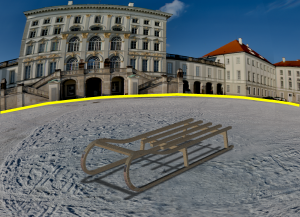
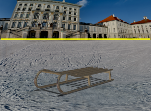
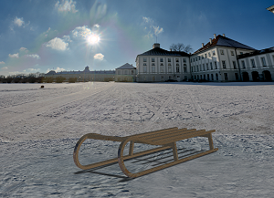
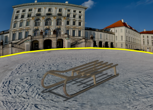
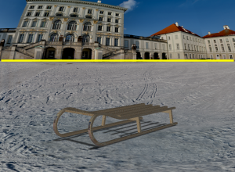
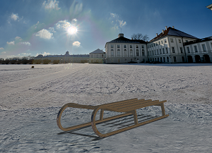

编辑3D 圆顶设置和方向
-
点击可视化形状工具条上的场景编辑器
 。
。 -
点击背景选项卡，确保背景是设置为3D 圆顶。
-
在3D 圆顶设置组中，调整图像地平线滑块，直到使之更水平。


-
在环境图像方向组中，调整旋转角度滑块以将圆顶旋转到另一个方向。

点击可视化形状工具条上的场景编辑器  。
。
点击背景选项卡，确保背景是设置为3D 圆顶。
在3D 圆顶设置组中，调整图像地平线滑块，直到使之更水平。


在环境图像方向组中，调整旋转角度滑块以将圆顶旋转到另一个方向。
